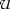
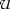
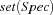
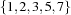
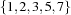

7 Finite Set Constraints: FS
We use the following notation for operations and relations on sets. We write , and for set union, intersection, and difference, and  for inclusion and disjointness,
for inclusion and disjointness,  for the set cardinality, and
for the set cardinality, and  for the element relation. Furthermore, we write
for the element relation. Furthermore, we write  and  for the empty set and the universal set.
and  for the empty set and the universal set.
For every set specification Spec we write the set M specified by Spec as M = . For example, ![\conv(\mbox{\codeinline{oz}{[1\#3 5 7]}})](latex115.png) denotes . Further, for every set
denotes . Further, for every set S we denote with  a set description D such that
a set description D such that  .
.
For more information on the finite set constraint system see [MM97].